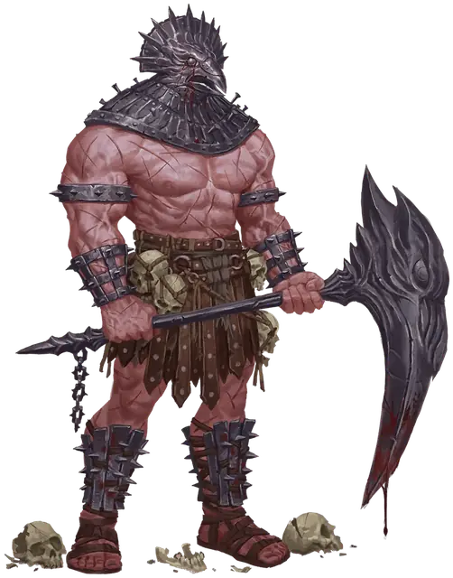

Изувер джаггернаут
Relentless Juggernaut
Большое Исчадие, Нейтральное Злое

Класс Защиты 16 Инициатива +1 (11)
Хиты 168 (16к10 + 80)
Скорость 30 футов
| мод | спас | ||
|---|---|---|---|
| СИЛ | 22 | +6 | +6 |
| ЛОВ | 12 | +1 | +5 |
| ТЕЛ | 20 | +5 | +5 |
| мод | спас | ||
|---|---|---|---|
| ИНТ | 8 | −1 | −1 |
| МДР | 15 | +2 | +6 |
| ХАР | 16 | +3 | +7 |
Иммунитеты Испуганный, Истощение, Очарованный
Чувства Тёмное зрение 120 футов, пассивное Восприятие 12
Языки знает Все, но не говорит
Опасность 12 (8 400 опыта; БВ +4)
Особенности
Легендарное сопротивление (3/день). Если джаггернаут проваливает спасбросок, он вместо этого может в нём преуспеть.
Регенерация. Джаггернаут восстанавливает 10 Хитов в начале каждого своего хода. Когда джаггернаут получает урон Излучением или от Критического попадания, в следующий ход джаггернаута эта особенность не срабатывает. Джаггернаут умирает, только если начинает свой ход с 0 Хитов и не может регенерировать.
Осадное чудовище. Джаггернаут наносит двойной урон объектам и постройкам.
Действия
Мультиатака. Джаггернаут совершает две атаки Клинком палача или Давильным камнем в любой комбинации.
Клинок палача. Бросок рукопашной атаки: +10, досягаемость 10 фт. Попадание: 19 (3к8 + 6) Рубящего урона, и Скорость цели снижена на 10 футов до конца следующего хода джаггернаута.
Давильный камень. Бросок дальнобойной атаки: +10, дистанция 60 фт. Попадание: 13 (2к6 + 6) Дробящего урона, и цель Недееспособна до начала следующего хода джаггернаута.
Легендарные действия
У этого существа есть 3 использования Легендарных действий; оно может немедленно после окончания хода другого существа потратить одно использование, чтобы совершить одно из следующих действий. Существо восполняет все потраченные использования в начале каждого своего хода.
Неотвратимое наступление. Джаггернаут перемещается на расстояние вплоть до половины своей Скорости, игнорируя Труднопроходимую местность. Все существа на его пути подвергаются следующему эффекту. Спасбросок Силы: Сл 18. Провал: 7 (2к6) Дробящего урона, и цель Опрокидывается. Провал или успех: Джаггернаут не может совершить это действие снова до начала своего следующего хода.
Косящий взмах. Спасбросок Ловкости: Сл 18, все существа в 15-футовом Конусе. Провал: 11 (1к10 + 6) Рубящего урона, и цель притягивается на расстояние вплоть до 10 футов по прямой к джаггернауту.
Бонус мастерства +4
Среда обитания Любая
Сокровища Оружейные
Неумолимые изуверы
Связанные договором душегубы
Неумолимые изуверы — это искажённые силой исчадий маньяки, что возникают из смертных, заключивших сделку с нечестивыми силами. Способности их зависят от их собственных навязчивых идей и источника тёмного могущества.
Изуверы джаггернауты — массивные громилы, без устали преследующие свои цели. Они орудуют особыми клинками и грубыми каменными глыбами, которые используют как орудия жестокой расправы.